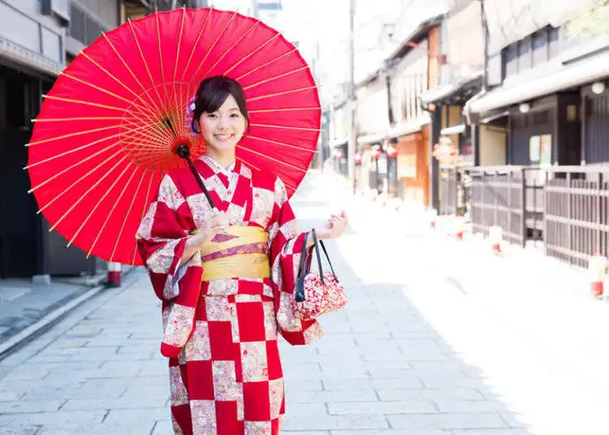

Geloof
De bevolking van Japan is volgens de wet vrij om te geloven wat hij of zij wil. Veel mensen geloven in het Shintoïsme en het Boeddhisme.
Dit zijn dan ook de belangrijkste geloven, maar de verschillen tussen de 2 religies zijn vrij klein. Daarom neemt de bevolking vaak beide geloven aan.
Naast deze geloven zijn er nog veel meer religies te vinden, die soms (in onze ogen) een beetje vreemd overkomen.
Deze kunnen gebaseerd zijn op sciencefiction of stripverhalen.

Muziek
Japan kent diverse muziekstijlen. Het begon in de 9e eeuw met de introductie van een aantal instrumenten.
Dit breidde zich uit en in de 16e eeuw ontstond er volksmuziek.
In de 19e eeuw werd de westerse klassieke muziek in het land geïntroduceerd, dat nu een integraal onderdeel is van de Japanse cultuur.
In Japan doen de mensen veel aan karaoke. Dit wordt vooral bij feesten met veel plezier gedaan.
De bewoners zingen zo hard als ze kunnen en het is grappig om te zien.

Kleding
Een kimono is een traditioneel kledingstuk in Japan. Het is een losse mantel met wijde mouwen.
Rond de middel wordt de kimono met een ceintuur (obi) vastgebonden. Als de Japanners een kimono aanhebben, dragen ze ook vaak zori.
Dit zijn Japanse slippers die vaak van hout, riet of kunststof zijn gemaakt. In de zori draagt men traditionele sokken (tabi).
Deze traditionele kleding wordt bij officiële gelegenheden gedragen zoals een theeceremonie of bruiloft.

Theater
Kabuki (歌舞伎, かぶき) is een klassieke vorm van Japans theater, waarbij dramatische voorstellingen worden vermengd met traditionele dans.
Het Kabuki-theater staat bekend om zijn sterk gestileerde voorstellingen, zijn glamoureuze, sterk versierde kostuums en de uitgebreide kumadori-make-up die sommige artiesten dragen.